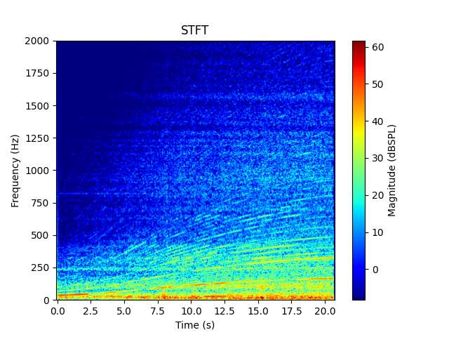

Note
Go to the end to download the full example code.
Isolate orders#
Orders are harmonic and partial components in the sound related to the speed of a rotating machine. This example shows how to isolate orders in a signal containing an RPM profile. It also uses additional classes from PyAnsys Sound to compute spectrograms and the loudness of the isolated signals.
# Maximum frequency for STFT plots, change according to your need
MAX_FREQUENCY_PLOT_STFT = 2000.0
Set up analysis#
Setting up the analysis consists of loading Ansys libraries, connecting to the DPF server, and retrieving the example files.
# Load Ansys libraries.
import os
import pathlib
import matplotlib.pyplot as plt
import numpy as np
from ansys.sound.core.examples_helpers import (
download_accel_with_rpm_2_wav,
download_accel_with_rpm_3_wav,
download_accel_with_rpm_wav,
)
from ansys.sound.core.psychoacoustics import LoudnessISO532_1_Stationary
from ansys.sound.core.server_helpers import connect_to_or_start_server
from ansys.sound.core.signal_utilities import LoadWav, WriteWav
from ansys.sound.core.spectrogram_processing import IsolateOrders, Stft
# Connect to a remote DPF server or start a local DPF server.
my_server, my_license_context = connect_to_or_start_server(use_license_context=True)
Define custom STFT plot function#
Define a custom function for STFT plots. It differs from the Stft.plot() method in that it
does not display the phase and allows setting custom title, maximum SPL, and maximum frequency.
def plot_stft(
stft: Stft,
fs: float,
SPLmax: float,
title: str = "STFT",
maximum_frequency: float = MAX_FREQUENCY_PLOT_STFT,
) -> None:
"""Plot a short-term Fourier transform (STFT) into a figure window.
Parameters
----------
stft: Stft
Object containing the STFT.
fs: float
Sampling frequency of the signal in Hz.
SPLmax: float
Maximum value (here in dB SPL) for the colormap.
title: str, default: "STFT"
Title of the figure.
maximum_frequency: float, default: MAX_FREQUENCY_PLOT_STFT
Maximum frequency in Hz to display.
"""
magnitude = stft.get_stft_magnitude_as_nparray()
magnitude_unit = stft.get_output()[0].unit
frequency_unit = stft.get_output()[0].time_freq_support.time_frequencies.unit
time_unit = stft.get_output().time_freq_support.time_frequencies.unit
# Only extract the first half of the STFT, as it is symmetrical
half_nfft = int(magnitude.shape[0] / 2) + 1
# Voluntarily ignore a numpy warning
np.seterr(divide="ignore")
magnitude = 20 * np.log10(magnitude[0:half_nfft, :])
np.seterr(divide="warn")
# Obtain sampling frequency, time steps, and number of time samples
time_data_spectrogram = stft.get_output().time_freq_support.time_frequencies.data
# Define boundaries of the plot
extent = [time_data_spectrogram[0], time_data_spectrogram[-1], 0.0, fs / 2.0]
# Plot
plt.figure()
plt.imshow(
magnitude,
origin="lower",
aspect="auto",
cmap="jet",
extent=extent,
vmax=SPLmax,
vmin=SPLmax - 70.0,
)
plt.colorbar(label=f"Magnitude ({magnitude_unit})")
plt.ylabel(f"Frequency ({frequency_unit})")
plt.xlabel(f"Time ({time_unit})")
plt.ylim([0.0, maximum_frequency]) # Change the value of MAX_FREQUENCY_PLOT_STFT if needed
plt.title(title)
plt.show()
Load a signal with an RPM profile#
Load a signal that has been generated with Ansys Sound Analysis
and Specification (SAS) from a WAV file using the LoadWav class.
This class contains two channels:
The actual signal (an acceleration recording)
The associated RPM profile
# Return the input data of the example file
path_accel_wav = download_accel_with_rpm_wav(server=my_server)
# Load the WAV file.
wav_loader = LoadWav(path_accel_wav)
wav_loader.process()
fc_signal = wav_loader.get_output()
fs = wav_loader.get_sampling_frequency()
# Extract the audio signal and the RPM profile
wav_signal, rpm_signal = wav_loader.get_output_as_nparray()
# Extract time support associated with the signal
time_support = fc_signal[0].time_freq_support.time_frequencies
# Plot the signal and its associated RPM profile
fig, ax = plt.subplots(nrows=2, sharex=True)
ax[0].plot(time_support.data, wav_signal)
ax[0].set_title("Audio Signal")
ax[0].set_ylabel(f"Amplitude ({fc_signal[0].unit})")
ax[0].grid(True)
ax[1].plot(time_support.data, rpm_signal, color="red")
ax[1].set_title("RPM profile")
ax[1].set_ylabel(f"RPM ({fc_signal[1].unit})")
ax[1].grid(True)
plt.xlabel(f"Time ({time_support.unit})")
plt.show()
Plot spectrogram of the original signal#
Plot the spectrogram of the original signal.
Isolate orders#
Isolate orders 2, 4, and 6 with the IsolateOrders class.
field_wav, field_rpm = wav_loader.get_output()
# Define parameters for order isolation
order_to_isolate = [2, 4, 6] # Orders indexes to isolate as a list
fft_size = 8192 # FFT Size (in samples)
window_type = "HANN" # Window type
window_overlap = 0.9 # Window overlap
width_selection = 3 # Width of the order selection in Hz
# Instantiate the ``IsolateOrders`` class with the parameters
isolate_orders = IsolateOrders(
signal=field_wav,
rpm_profile=field_rpm,
orders=order_to_isolate,
fft_size=fft_size,
window_type=window_type,
window_overlap=window_overlap,
width_selection=width_selection,
)
# Isolate orders
isolate_orders.process()
# Plot the spectrogram of the isolated orders
stft.signal = isolate_orders.get_output()
stft.process()
plot_stft(stft, fs, max_stft)
Isolate different orders#
Change FFT size, order indexes, and window type. Then re-isolate the orders.
# Change some parameters directly using the setters of the class
isolate_orders.orders = [2, 6]
isolate_orders.window_type = "BLACKMAN"
# Reprocess (Must be called explicitly. Otherwise, the output won't be updated.)
isolate_orders.process()
# Plot the spectrogram of the isolated orders
stft.signal = isolate_orders.get_output()
stft.process()
plot_stft(stft, fs, max_stft)
Work with the isolated signal#
Plot the signal containing the isolated orders and compute its loudness.
# Plot the signal directly using the method from the ``IsolateOrders`` class
isolate_orders.plot()
# Use the ``Loudness`` class to compute the loudness of the isolate signal
input_loudness = isolate_orders.get_output()
input_loudness.unit = "Pa"
loudness = LoudnessISO532_1_Stationary(signal=input_loudness)
loudness.process()
loudness_level_isolated_signal = loudness.get_loudness_level_phon()
# Compute the loudness for the original signal
loudness.signal = field_wav
loudness.process()
loudness_level_original_signal = loudness.get_loudness_level_phon()
print(f"The loudness level of the original signal is {loudness_level_original_signal:.1f} phons.")
print(f"The loudness level of the isolated signal is {loudness_level_isolated_signal:.1f} phons.")
The loudness level of the original signal is 76.6 phons.
The loudness level of the isolated signal is 61.4 phons.
Isolate orders of several signals in a loop#
Loop over a list of given signals and write them as a WAV file.
# Obtain parent folder of the 'accel_with_rpm.wav' file
parent_folder = pathlib.Path(path_accel_wav).parent.absolute()
path_accel_wav_2 = download_accel_with_rpm_2_wav(server=my_server)
path_accel_wav_3 = download_accel_with_rpm_3_wav(server=my_server)
paths = (path_accel_wav, path_accel_wav_2, path_accel_wav_3)
fft_sizes = [256, 2048, 4096]
wav_writer = WriteWav()
# Isolate orders for all the files containing RPM profiles in this folder
for file, fft_sz in zip(paths, fft_sizes):
# Loading the file
wav_loader.path_to_wav = file
wav_loader.process()
# Set parameters for order isolation
isolate_orders.signal = wav_loader.get_output()[0]
isolate_orders.rpm_profile = wav_loader.get_output()[1]
isolate_orders.fft_size = fft_sz
isolate_orders.process()
# Write as a WAV file on the disk
out_name = os.path.basename(file)[:-4] + "_isolated_fft_size_" + str(fft_sz) + ".wav"
path_to_write = parent_folder / out_name
wav_writer.path_to_write = str(path_to_write)
wav_writer.signal = isolate_orders.get_output()
wav_writer.process()
Total running time of the script: (2 minutes 16.168 seconds)